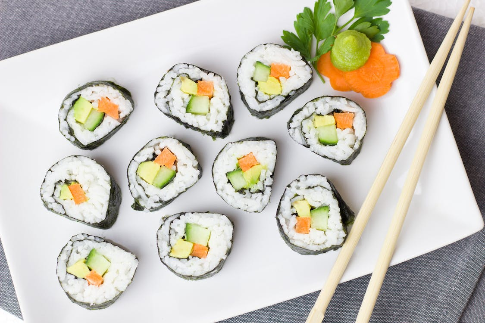

Korean Food
 |
 |
The main ingredients in Korean cuisine are rice, noodles, veggies, meats, and tofu (dubu in Korean). Typical Korean dinners include a plethora of side dishes (banchan) that are served alongside steam-cooked short-grain rice, soup, and kimchi (fermented, spicy vegetable banchan, most commonly cabbage, radish, or cucumber). Every meal is accompanied by banchan. Korean food is typically seasoned with sesame oil, doenjang (fermented soybean paste), soy sauce, salt, garlic, ginger, and gochujang (red chili paste). Before refrigeration, Koreans stored kimchi and other pickled vegetables underground in open courtyards throughout the winter in large ceramic vessels. This method is still practiced in some rural areas of South Korea. Although many Koreans living in cities buy prepared traditional food from supermarkets or outdoor markets, preparing Korean food needs a lot of work.
Street cuisine in South Korea is a foodie's paradise. These are not only delicious, but also a terrific option for economical Korean food. On the streets of South Korea, you may get a variety of meals and snacks ranging from sweet to savory. Insadong, Myeongdong, and Hongdae are some of the greatest areas to obtain street cuisine. Many travelers who visit Korea prepare a full dinner from street cuisine. To make a complete lunch, they eat two or three different varieties of street cuisine. Korean fried chicken, fishcake, dumplings, gimbap, pancakes, spicy rice cakes, and fried snacks are some of the most popular street foods in South Korea.